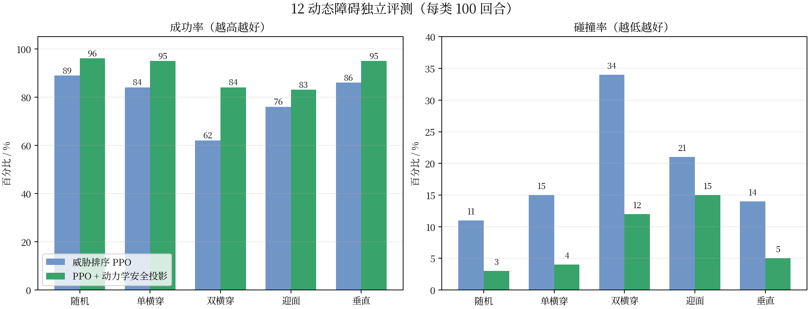

四旋翼动态避障优化阶段汇报
生成日期：2026-08-20 项目：/home/user/UAV_Dreamer
阶段结论
当前推荐方案为 8 帧威胁排序 PPO + 动力学安全投影。系统使用真实 CF2X 刚体、电机响应、240 Hz 物理积分、10 Hz 决策、起飞悬停和停机坪稳定到达判据。安全层只在 2.5 秒预测窗内稀疏修正速度，修正后仍经过加速度限制和底层飞控。

独立评测（每类 100 回合）
| 场景 | 威胁排序 PPO | 推荐方案 | 变化 |
|---|---|---|---|
| 普通随机 | 89% / 11% | 96% / 3% | 成功 +7 pp，碰撞 -8 pp |
| 单横穿 | 84% / 15% | 95% / 4% | +11 / -11 pp |
| 双横穿 | 62% / 34% | 84% / 12% | +22 / -22 pp |
| 迎面 | 76% / 21% | 83% / 15% | +7 / -6 pp |
| 垂直三维 | 86% / 14% | 95% / 5% | +9 / -9 pp |
动力学稳定性
| 指标 | 普通随机 | 双横穿 |
|---|---|---|
| 平均速度 | 0.811 m/s | 0.752 m/s |
| 95% 倾角 | 7.99° | 8.38° |
| P10 最小净空 | 0.226 m | 0.062 m |
| 投影激活率 | 11.1% | 27.8% |
完整任务自动降落

PPO 动态避障到达停机坪上方后，依次执行定点悬停确认、0.12 m/s 下降、近地 0.05 m/s 拉平、接触/速度/姿态联合判定和 0.40 s 停桨。种子 10041 共 271 步，最终接触为 True、速度约 0、四电机转速为 0。全过程使用速度—姿态级联和刚体动力学，没有直接改写位置。
双横穿可视化

种子 10041：121 步稳定到达，最终距离约 0.033 m，无碰撞、无越界。仪表板同时显示 8 帧 LiDAR、极坐标扫描、128 维融合特征、飞行遥测和安全投影修正。
关键产物
- 推荐权重：
outputs/ablations/stage27_shield_g060_m070/ppo_static_obstacle.zip - 归一化统计：
outputs/ablations/stage27_shield_g060_m070/vec_normalize.pkl - 评测：
outputs/evaluation/stage27_shield_*_100/metrics.json - 自动测试：26 项全部通过